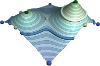

I am a research scientist (DR2) at the
CNRS.
Since September 2014, I am a faculty member of the
Computer Science Department (LIP6,
APR team) of
Sorbonne Universite.
From 2010 to 2014, I was a faculty
member of the
TII Team
of the
LTCI
lab
at Telecom ParisTech.
Prior to my CNRS tenure, I held a postdoctoral research associate position
at the
Scientific Computing and
Imaging Institute at the University of
Utah. I
defended my Ph.D. thesis in October 2008 at the
University of Lille.
My research focuses on Topological Data Analysis and Visualization.
I am the principal investigator of the project TORI (In-situ Topological Reduction of Scientific Data), awarded by the ERC.
I'm hiring! Feel free to send me applications :)
My research focuses on Topological Data Analysis and Visualization.
I am the principal investigator of the project TORI (In-situ Topological Reduction of Scientific Data), awarded by the ERC.
I'm hiring! Feel free to send me applications :)
News
| · We have one open internship position (master2 level, with Ph.D. follow-up)! | [Sep 22, 2021] |
| · Our paper on Persistence Diagram Approximation has been accepted to IEEE LDAV 2021! | [Aug. 14, 2021] |
| · Our paper on Wasserstein barycenters of Merge Trees has been accepted to IEEE VIS 2021! | [Jul. 22, 2021] |
| · Our paper on Progressive Scalar Field Topology has been accepted to the IEEE TVCG journal! | [Feb. 17, 2021] |
| · TTK 0.9.9 is out! Download it and check it out :) | [Dec. 21, 2020] |
| · Join us online at IEEE VIS 2020 (October 26) for a half-day TTK tutorial! | [Oct 8, 2020] |
Research |
| |
Teaching |
| |
Misc |
| |

|
Wasserstein Distances, Geodesics and Barycenters of Merge Trees
Mathieu Pont, Jules Vidal, Julie Delon, Julien Tierny IEEE Transactions on Visualization and Computer Graphics Proc. of IEEE VIS 2021. Code - Data - Replicability stamp |
|

|
A Progressive Approach to Scalar Field Topology
Jules Vidal, Pierre Guillou, Julien Tierny IEEE Transactions on Visualization and Computer Graphics Accepted, to be presented at IEEE VIS 2021. Code - Companion video - Replicability stamp |
|
|
Fast Approximation of Persistence Diagrams with Guarantees
Jules Vidal and Julien Tierny Proc. of IEEE Symposium on Large Data Analysis and Visualization 2021. Code and Data |
||
|
Topological Analysis of Ensemble Scalar Data with TTK
Christoph Garth, Charles Gueunet, Pierre Guillou, Lutz Hofmann, Joshua A Levine, Jonas Lukasczyk, Julien Tierny, Jules Vidal, Bei Wang, Florian Wetzels IEEE VIS Tutorials 2021. Tutorial web page |
||
|
TopoMap: A 0-dimensional Homology Preserving Projection of High-Dimensional Data
Harish Doraiswamy, Julien Tierny, Paulo J. S. Silva, Luis Gustavo Nonato, Claudio Silva IEEE Transactions on Visualization and Computer Graphics Proc. of IEEE VIS 2020. |
||
|
Localized Topological Simplification of Scalar Data
Jonas Lukasczyk, Christoph Garth, Ross Maciejewski, Julien Tierny IEEE Transactions on Visualization and Computer Graphics Proc. of IEEE VIS 2020. Code |
||
|
Topological Data Analysis Made Easy with the Topology ToolKit, What is New?
Martin Falk, Christoph Garth, Charles Gueunet, Pierre Guillou, Attila Gyulassy, Lutz Hofmann, Christopher Kappe, Joshua A Levine, Jonas Lukasczyk, Julien Tierny, Jules Vidal IEEE VIS Tutorials 2020. Tutorial web page |
||
|
Implementing Persistence-Based Clustering of Point Clouds in the Topology ToolKit
Ryan Cotsakis, Jim Shaw, Julien Tierny, and Joshua A. Levine Upcoming TopoInVis book (accepted). |
||
|
Report of the TopoInVis TTK Hackathon: Experiences, Lessons Learned, and Perspectives
Jonas Lukasczyk, Jakob Beran, Wito Engelke, Martin Falk, Anke Friederici, Christoph Garth, Lutz Hofmann, Ingrid Hotz, Petar Hristov, Wiebke Kpp, Talha Bin Masood, Magorzata Olejniczak, Paul Rosen, Jan-Tobias Sohns, Tino Weinkauf, Kilian Werner, Julien Tierny Upcoming TopoInVis book (accepted). |
||
|
A Topological Data Analysis Perspective on Non-Covalent Interactions in Relativistic Calculations
Magorzata Olejniczak, Andr Severo Pereira Gomes, Julien Tierny, International Journal of Quantum Chemistry Code and data - Journal cover! |
||

|
Progressive Wasserstein Barycenters of Persistence Diagrams
Jules Vidal, Joseph Budin, Julien Tierny IEEE Transactions on Visualization and Computer Graphics Proc. of IEEE VIS 2019. Best Paper Honorable Mention Award Supplemental material - Code - Fast forward video - Replicability stamp |
|
|
Ranking Viscous Finger Simulations to an Acquired Ground Truth with Topology-Aware Matchings
Maxime Soler, Martin Petitfrere, Gilles Darche, Melanie Plainchault, Bruno Conche, Julien Tierny Proc. of IEEE Symposium on Large Data Analysis and Visualization 2019. Best Paper Award |
||
|
Task-based Augmented Reeb Graphs with Dynamic ST-Trees
Charles Gueunet, Pierre Fortin, Julien Jomier, Julien Tierny Proc. of Eurographics Symposium on Parallel Graphics and Visualization 2019 Code - Data |
||
|
Topological Analysis of High Velocity Turbulent Flow
Thibault Bridel-Bertomeu, Benjamin Fovet, Julien Tierny, Fabien Vivodtzev Proc. of IEEE Symposium on Large Data Analysis and Visualization 2019 (posters). Video1 - Video2 - Video3 |
||
|
An Overview of the Topology ToolKit
Talha Bin Masood, Joseph Budin, Martin Falk, Guillaume Favelier, Christoph Garth, Charles Gueunet, Pierre Guillou, Lutz Hofmann, Petar Hristov, Adhitya Kamakshidasan, Christopher Kappe, Pavol Klacansky, Patrick Laurin, Joshua A. Levine, Jonas Lukasczyk, Daisuke Sakurai, Maxime Soler, Peter Steneteg, Julien Tierny, Will Usher, Jules Vidal, Michal Wozniak Upcoming TopoInVis book (accepted). |
||
|
Statistical Parameter Selection for Clustering Persistence Diagrams
Max Kontak, Jules Vidal, Julien Tierny Proc. of Super Computing workshop on Urgent HPC 2019 |
||
|
Topological Data Analysis Made Easy with the Topology ToolKit, A Sequel
Martin Falk, Christoph Garth, Charles Gueunet, Joshua A Levine, Jonas Lukasczyk, Julien Tierny, Jules Vidal IEEE VIS Tutorials 2019. Tutorial web page |
||
|
Task-based Augmented Contour Trees with Fibonacci Heaps
Charles Gueunet, Pierre Fortin, Julien Jomier, Julien Tierny IEEE Transactions on Parallel and Distributed Systems Accepted, 2019. Code |
||
|
Persistence Atlas for Critical Point Variability in Ensembles
Guillaume Favelier, Noura Faraj, Brian Summa, Julien Tierny IEEE Transactions on Visualization and Computer Graphics Proc. of IEEE VIS 2018. Video - Code - Replicability stamp |
||
|
Lifted Wasserstein Matcher for Fast and Robust Topology Tracking
Maxime Soler, Melanie Plainchault, Bruno Conche, Julien Tierny Proc. of IEEE Symposium on Large Data Analysis and Visualization 2018. Best Paper Honorable Mention Award Online demo of the core algorithm |
||
|
Topological Data Analysis Made Easy with the Topology ToolKit
Guillaume Favelier, Charles Gueunet, Attila Gyulassy, Julien Jomier, Joshua Levine, Jonas Lukasczyk, Daisuke Sakurai, Maxime Soler, Julien Tierny, Will Usher, Qi Wu IEEE VIS Tutorials 2018. Tutorial web page |
||
|
Topologically Controlled Lossy Compression
Maxime Soler, Melanie Plainchault, Bruno Conche, Julien Tierny Proc. of IEEE PacificVis 2018. Code |
||
|
Topological Data Analysis for Scientific Visualization
Julien Tierny Springer, 2018 (ISBN 978-3-319-71507-0). |
||
|
The Topology ToolKit
Julien Tierny, Guillaume Favelier, Joshua Levine, Charles Gueunet and Michael Michaux IEEE Transactions on Visualization and Computer Graphics Proc. of IEEE VIS 2017. Best Paper Honorable Mention Award Video - Code |
||
|
Visualizing the Uncertainty of Graph-based 2D Segmentation
with Min-path Stability
Brian Summa, Julien Tierny, Valerio Pascucci Computer Graphics Forum. Proc. of EuroVis 2017. |
||
|
Task-based Augmented Merge Trees with Fibonacci Heaps
Charles Gueunet, Pierre Fortin, Julien Jomier, Julien Tierny Proc. of IEEE Symposium on Large Data Analysis and Visualization 2017. Code |
||
|
Conformal Factor Persistence for Fast Hierarchical Cone Extraction
Ana Vintescu, Florent Dupont, Guillaume Lavoue, Pooran Memari, Julien Tierny Proc. of Eurographics 2017 (short papers). |
||
|
Least Squares Affine Transitions for Global Paramterization
Ana Vintescu, Florent Dupont, Guillaume Lavoue, Pooran Memari, Julien Tierny Proc. of WSCG 2017. |
||
|
Viscous Fingering: A Topological Visual Analytic Approach Jonas Lukasczyk, Garrett Aldrich, Michael Steptoe, Guillaume Favelier, Charles Gueunet, Julien Tierny, Ross Maciejewski, Bernd Hamann, and Heike Leitte Proc. of Conference on Physical Modeling for Virtual Manufacturing Systems and Processes 2017. |
||
|
Jacobi Fiber Surfaces for Bivariate Reeb Space Computation
Julien Tierny and Hamish Carr IEEE Transactions on Visualization and Computer Graphics Proc. of IEEE VIS 2016. Best Paper Award Video - Code |
||
|
Fast and Exact Fiber Surfaces for Tetrahedral Meshes
Pavol Klacansky, Julien Tierny, Hamish Carr, Zhao Geng IEEE Transactions on Visualization and Computer Graphics Accepted, to be presented at IEEE VIS 2016. Video - Code |
||
|
Contour Forests: Fast Multi-threaded Augmented Contour Trees
Charles Gueunet, Pierre Fortin, Julien Jomier, Julien Tierny Proc. of IEEE Symposium on Large Data Analysis and Visualization 2016. Code |
||
|
Visualizing Ensembles of Viscous Fingers
Guillaume Favelier, Charles Gueunet, Julien Tierny IEEE VIS Scientific Visualization Contest 2016. Honorable Mention Award Video |
||
|  |
Habilitation Thesis (HDR): Contributions to Topological Data Analysis for Scientific Visualization Julien Tierny Sorbonne Universite. April 2016. Committee: I. Bloch (President), J.-D. Fekete (Examiner), P. Frey (Examiner), H. Hagen (Reviewer), C. Johnson (Reviewer), B. Levy (Reviewer), P. Ricoux (Examiner), W. Schroeder (Examiner). |
|
|
Fiber Surfaces: Generalizing Isosurfaces to Bivariate Data
Hamish Carr, Zhao Geng, Julien Tierny, Amit Chattopadhyay, Aaron Knoll Computer Graphics Forum. Proc. of EuroVis 2015, accepted. Video |
||
|
Distributed Seams for Gigapixel Panoramas
Sujin Philip, Brian Summa, Julien Tierny, Peer-Timo Bremer, Valerio Pascucci IEEE Transactions on Visualization and Computer Graphics. Accepted. |
||
|
Conforming Morse-Smale Complexes
Attila Gyulassy, David Guenther, Joshua Levine, Julien Tierny, Valerio Pascucci IEEE Transactions on Visualization and Computer Graphics. Proc. of IEEE VIS 2014, accepted. |
||
|
Characterizing Molecular Interactions in Chemical Systems
David Guenther, Roberto Alvarez Boto, Julia Contreras-Garcia, Jean-Philip Piquemal, Julien Tierny IEEE Transactions on Visualization and Computer Graphics. Proc. of IEEE VIS 2014, accepted. |
||
|
Mandatory Critical Points of 2D Uncertain Scalar Fields
David Guenther, Joseph Salmon, Julien Tierny Computer Graphics Forum. Proc. of EuroVis 2014, accepted. Video |
||
|
Active Stitching: Beyond Batch Processing of Panoramas
Brian Summa, Julien Tierny, Peer-Timo Bremer, Giorgio Scorzelli, and Valerio Pascucci Technical Report, September 2013. Video |
||

|
Jacobians and Hessians of Mean Value Coordinates for Closed Triangular
Meshes
Jean-Marc Thiery, Julien Tierny, and Tamy Boubekeur The Visual Computer Journal. Accepted, 2013. Video - Code - Appendix |
|
|
Scalable Seams for Gigapixel Panoramas
Sujin Philip, Brian Summa, Julien Tierny, Peer-Timo Bremer, Valerio Pascucci Proc. of Eurographics Symposium on Parallel Graphics and Visualization 2013. Best Paper Award. |
||
|
Optimal General Simplification of Scalar Fields on Surfaces
Julien Tierny, David Guenther, and Valerio Pascucci Topological and Statistical Methods for Complex Data, Accepted. |
||
|
Accurate and robust shape descriptors for the identification of rib cage
structures in CT-images with Random Forests
Mariem Gargouri, Julien Tierny, Erwan Jolivet, Philippe Petit, Elsa Angelini Proc. of IEEE ISBI 2013. |
||
|
Quality Evaluation of 3D City Building Models with Automatic Error
Diagnosis
Jean-Christophe Michelin, Julien Tierny, Florence Tupin, Clement Mallet, and Nicolas Paparoditis Proc. of ISPRS Conference on SSG 2013. |
||
|
Generalized Topological Simplification of Scalar Fields on Surfaces
Julien Tierny and Valerio Pascucci IEEE Transactions on Visualization and Computer Graphics. Proc. of IEEE VIS 2012, accepted. Video - Code |
||
|
Panorama Weaving: Fast and Flexible Seam Processing Brian Summa, Julien Tierny and Valerio Pascucci ACM Transactions on Graphics. Proc. of ACM SIGGRAPH 2012, accepted. Video |
||
|
CageR: Cage-based Reverse Engineering of Animated 3D Shapes Jean-Marc Thiery, Julien Tierny and Tamy Boubekeur Computer Graphics Forum. Accepted 2012, Presented at Eurographics 2013. Video - SIGGRAPH 2012 Talk |
||
|
Analytic Curve Skeletons for 3D Surface Modeling and Processing Jean-Marc Thiery, Bert Buchholz, Julien Tierny and Tamy Boubekeur Computer Graphics Forum. Proc. of Pacific Graphics 2012, accepted. |
||
|
Inspired quadrangulation Julien Tierny, Joel Daniels II, Luis Gustavo Nonato, Valerio Pascucci and Claudio Silva Computer Aided Design. Proc. of ACM SPM 2011, accepted. Video - Appendix |
||
|
Topology verification for isosurface extraction Tiago Etiene, Luis Gustavo Nonato, Carlos Scheidegger, Julien Tierny, Thomas Peters, Valerio Pascucci, Mike Kirby and Claudio Silva IEEE Transactions on Visualization and Computer Graphics. Accepted 2011, Presented at IEEE VIS 2011. |
||
|
Interactive
quadrangulation with Reeb atlases and connectivity textures
Julien Tierny, Joel Daniels II, Luis Gustavo Nonato, Valerio Pascucci and Claudio Silva IEEE Transactions on Visualization and Computer Graphics. Accepted, 2011. Video |
||
|
Topological
methods in data analysis and visualization Valerio Pascucci, Xavier Tricoche, Hans Hagen and Julien Tierny (Editors) Springer, 2010 (ISBN 978-3-642-15013-5). |
||
|
Interactive
exploration and analysis of large scale simulations using topology-based
data segmentation Peer-Timo Bremer, Gunther Weber, Julien Tierny, Valerio Pascucci, Marcus Day and John Bell IEEE Transactions on Visualization and Computer Graphics. Accepted, 2010. |
||
|
Loop surgery for volumetric meshes: Reeb graphs reduced to contour
trees Julien Tierny, Attila Gyulassy, Eddie Simon and Valerio Pascucci IEEE Transactions on Visualization and Computer Graphics, Vol 15, 2009. Proc. of IEEE VIS 2009. Videos |
||

|
Partial 3D shape retrieval by Reeb pattern unfolding Julien Tierny, Jean-Philippe Vandeborre and Mohamed Daoudi Computer Graphics Forum, Vol 28, 2009. Binaries |
|
|
Enabling advanced visualization tools in a web-based simulation
monitoring system
Emanuele Santos, Julien Tierny, Ayla Khan, Brad Grimm, Lauro Lins, Juliana Freire, Valerio Pascucci, Claudio Silva, Scott Klasky, Roselyne Barreto,, Norbert Podhorszki Proc. of IEEE eScience 2009. |
||
|
A topological framework for the interactive exploration of large scale
turbulent combustion
Peer-Timo Bremer, Gunther Weber, Julien Tierny, Valerio Pascucci, Marcus Day and John Bell Proc. of IEEE eScience 2009. |
||
|
Reeb graph based 3D shape modeling and applications
Julien Tierny Ph.D. Thesis, LIFL, University of Lille. October 2008. Committee: A. Baskurt, B. Levy, C. Labit, A. Srivastava, S. Tison. Advisors: J.P. Vandeborre, M. Daoudi. Slides |
||

|
3D object indexing
Stefano Berretti, Mohamed Daoudi, Alberto del Bimbo, Tarik Filali-Ansary, Pietro Pala, Julien Tierny and Jean-Philippe Vandeborre Chapter of "3D object processing: compression, indexing and watermarking". Wiley, 2008. |
|
|
Enhancing 3D mesh topological skeletons with discrete contour
constrictions
Julien Tierny, Jean-Philippe Vandeborre and Mohamed Daoudi The Visual Computer, Vol 24, 2008. |
||
|
Fast and precise kinematic skeleton extraction of 3D dynamic meshes
Julien Tierny, Jean-Philippe Vandeborre and Mohamed Daoudi Proc. of IEEE ICPR 2008. |
||
|
Reeb chart unfolding based 3D shape signatures
Julien Tierny, Jean-Philippe Vandeborre and Mohamed Daoudi Proc. of Eurographics 2007 (short paper). |
||
|
Topology driven 3D mesh hierarchical segmentation
Julien Tierny, Jean-Philippe Vandeborre and Mohamed Daoudi Proc. of IEEE SMI 2007 (short paper). Video |
||
|
Geometry flavored topological skeletons: applications to shape handling,
segmentation and retrieval
Julien Tierny, Jean-Philippe Vandeborre and Mohamed Daoudi Proc. of Second DELOS Conference on Digital Libraries (invited paper), 2007. |
||
|
3D mesh models: view-based indexing and structural analysis
Mohamed Daoudi, Tarik Filali-Ansary, Julien Tierny and Jean-Philippe Vandeborre Proc. of DELOS Conference on Digital Libraries (invited paper) Lecture Notes in Computer Science, 2007. |
||
|
3D mesh skeleton extraction using topological and geometrical analyses
Julien Tierny, Jean-Philippe Vandeborre and Mohamed Daoudi Proc. of Pacific Graphics 2006. Video |
||
|
Invariant high level Reeb graphs of 3D polygonal meshes
Julien Tierny, Jean-Philippe Vandeborre and Mohamed Daoudi Proc. of IEEE 3DPVT 2006. |
||
Updated on Oct. 14, 2021.